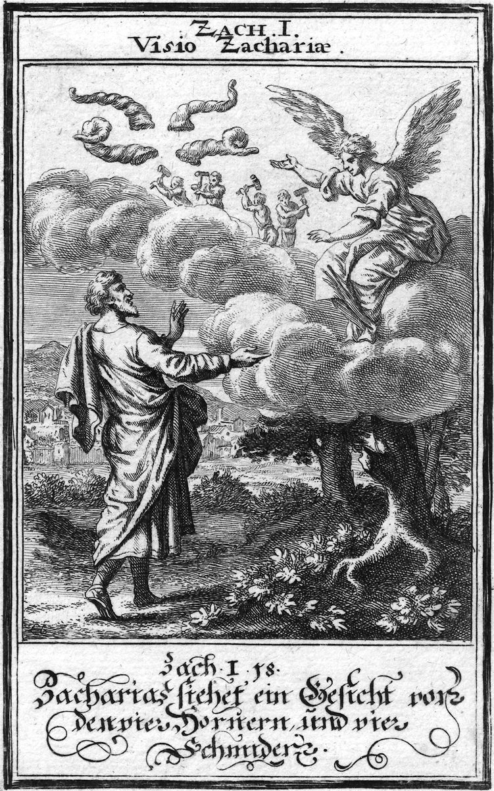

Zacarías 2 — La Traducción Mister

⚠ Christoph Weigel el Viejo fue un grabador de Núremberg cuya Biblia Ectypa (1695) ilustró toda la Biblia escena por escena, una de las Biblias impresas alemanas más copiadas de su época. Su propia leyenda, en el verso alemán bajo el marco, numera esto «Zach. I, 18» —siguiendo el conteo inglés/de la Vulgata, que coloca la visión de los cuatro cuernos al final del capítulo 1 (véase la nota a 1:16-17 arriba). Esta traducción sigue en cambio el conteo masorético, donde la misma visión abre el capítulo 2 —así que un grabado alemán de hace 320 años y esta traducción numeran la misma imagen de dos maneras distintas, por la misma razón.
.jpg){kind=link}
Notas del traductor
La SEGUNDA visión nocturna de Zacarías retoma exactamente donde quedó la primera. La patrulla del jinete informó que el mundo estaba «en reposo» mientras Jerusalén aún estaba de luto (1:11); ahora la visión explica por qué —cuatro cuernos, imágen fija en hebreo del poder bruto (el qeren, «cuerno», de un rey o una nación se «exalta»; quebrarlo es la abreviatura antigua de humillarlo)—, han dispersado a Judá, a Israel y a Jerusalén en toda dirección (v2). ⚠ La visión, deliberadamente, no los nombra. El apocalipsis posterior atará un cuerno a un imperio concreto —cada cuerno de Daniel corresponde a un reino identificable (Daníel 8, aún no traducido a estas páginas)—, pero aquí los cuatro cuernos son simplemente LOS CUATRO, una abstracción que representa a todo poder que alguna vez quebró a este pueblo, sin señalar a uno solo.
Luego llega la respuesta: cuatro artesanos, exactamente pareados con los cuatro cuernos, enviados «a espantarlos, a derribar los cuernos de las naciones» (v4). ⚠ Tampoco a estos se los nombra —no Ciro, no Darío, ningún agente histórico, solo artesanos con herramientas suficientes para contrarrestar lo que dispersó a Judá—. El equilibrio es todo el sentido de la visión: cualquiera que haya sido el poder que quebró a este pueblo, ya hay comisionado un poder igual y opuesto para quebrarlo a él.
⚠ La TERCERA visión abre con un instrumento de medir distinto del que prometía el capítulo 1. Allí, la imagen de cierre era un qav, el cordel del constructor, «tendido sobre Jerusalén» para RECONSTRUIR (1:16). Aquí la palabra es chevel middah, «un cordel de medida» —la herramienta del agrimensor para tomar las dimensiones reales de una ciudad, su anchura y su longitud (v6), no para trazar una sola línea recta de construcción—. Las dos visiones están unidas pero no son idénticas: el capítulo 1 promete el cordel de edificar; el capítulo 2 lo envía a tomar la medida real de la ciudad —y la medida, como mostrará el v8, vuelve inútil todo el proyecto—. RV1909 «Alcé después mis ojos, y miré y he aquí un varón que tenía en su mano un cordel de medir», casi idéntica a esta traducción.
El mensaje que se transmiten los ángeles invierte lo que normalmente significa un cordel de medir. Una ciudad medida en su anchura y longitud es una ciudad a punto de ser amurallada —pero la palabra que vuelve es la contraria: Jerusalén será habitada «como campo abierto» (perazot), sin muros en absoluto, porque la población de hombres y ganado que viene desbordará cualquier cosa que pudiera construirse (v8). ⚠ En su lugar: «yo mismo seré para ella un muro de fuego en derredor, y seré la gloria en medio de ella» (v9). El hebreo llama literalmente al fuego mismo chomah, «muro» —la misma palabra que ya vimos como el muro de piedra de una ciudad (el de Jericó cae plano; el mismo mar Rojo se llama chomah a ambos lados, Éxodo 14:22, ya en estas páginas)—, de modo que el versículo no promete simplemente protección: nombra al fuego como la fortificación literal de la ciudad, sin necesidad de piedra. RV1909 «Yo seré para ella, dice Jehová, muro de fuego en derredor, y seré por gloria en medio de ella»; TNM «llegaré a ser para ella un muro de fuego a su alrededor y llegaré a ser la gloria en medio de ella». Y «la gloria» (kavod) dentro de ella es la misma presencia pesada que Ezequiel ve partir del templo en una visión casi contemporánea a esta (Ezequiel 1:28, ya en estas páginas) —salvo que aquí no llena un edificio, sino una ciudad entera sin murallas—.
⚠ Curiosamente, ya la vieja RV1909, en sus notas al margen a este mismo versículo, señalaba dos ecos: Isaías 60:19 (aún no traducido a estas páginas) y Apocalipsis 21:23, ya en estas páginas —«la ciudad no tiene necesidad de sol ni de luna que brillen en ella, porque la gloria de Dios la iluminó»—. Fuego en vez de piedra, luego gloria en vez de sol: la misma inversión, cinco siglos después. Hasta la medición misma se repite: el ángel con «una caña de medir, de oro, para medir la ciudad» (Apocalipsis 21:15) hace, casi versículo por versículo, lo mismo que el varón del cordel de medida hace aquí.
⚠ Hoy es el mismo grito de una sílaba que este proyecto ya encontró como lamento fúnebre —el «ay, me desahogaré de mis adversarios» de Isaías abre con la palabra idéntica (Isaías 1:24, ya en estas páginas)—. Aquí hace el trabajo contrario: no es luto, sino una llamada urgente, «¡Eh! ¡Eh!» —convocando a los desterrados que aún vivían en Babilonia a huir—. «La tierra del norte» es Babilonia por dirección de marcha, no por geografía literal (toda invasión de Israel en este periodo llegó en realidad DESDE el norte, siguiendo las rutas junto al Éufrates, y por eso la frase se volvió abreviatura del imperio, sin importar su rumbo real desde Jerusalén). El par personificado —«tú que moras con la hija de Babilonia», llamada a huir hacia Sion— enfrenta a una ciudad entera contra otra ciudad entera, la misma figura de la «hija de Sion» que cantará tres versículos después (v14). ⚠ RV1909 conserva un arcaísmo precioso, «huid de la tierra del aquilón» —aquilón, la vieja palabra castellana para el viento norte, hoy casi perdida—, mientras la TNM moderniza a «¡Vengan! ¡Vengan! Huyan de la tierra del norte», cambiando incluso la interjección misma por un imperativo llano.
⚠ El versículo 12 pasa de una narración clara a uno de los verdaderos enigmas del libro: «Jehová de los ejércitos, quien ME ENVIÓ». ¿A quién envió? El versículo nunca lo dice. Cada voz hasta ahora ha pertenecido a Zacarías narrador o a Jehová hablando en primera persona («yo mismo», v9); esta no es ninguna de las dos —un «mí» sin nombre, comisionado y enviado, que reporta las propias palabras de Jehová sobre proteger a su pueblo—. Los lectores han llenado el vacío de formas distintas: el mismo Zacarías, actuando como testigo formal contra las naciones; el ángel intérprete de los vv7–8; o, en una larga tradición mesiánica, un emisario celestial distinto que puede decir que «Jehová de los ejércitos» lo envió y luego, sin costura, seguir hablando COMO Jehová en la cláusula siguiente («toca la niña de SU ojo», no «de mi ojo» —un salto a tercera persona dentro de un oráculo en primera persona que es, él mismo, parte del enigma). Esta traducción deja el vacío abierto, como lo deja el hebreo.
⚠ La TNM resuelve la ambigüedad de un modo distinto: traduce «quien me envió … toca la niña de MIS ojos» —normalizando todo a primera persona, de modo que sea claramente Jehová quien habla de punta a punta—, mientras la RV1909 conserva el hebreo tal cual, «toca la niña de su ojo», dejando el salto de persona sin suavizar. Dos versiones, dos decisiones distintas sobre el mismo enigma. El modismo mismo es una incertidumbre filológica genuina: bavat ayin aparece exactamente una vez en toda la Biblia hebrea, y su raíz se discute entre «la puerta o abertura del ojo» y una palabra imitativa para una pequeña imagen reflejada —no el ishon más común («el hombrecito del ojo», p. ej. Deuteronomio 32:10, aún no traducido a estas páginas), una palabra hebrea distinta que suele aplanarse al mismo modismo español. Esta traducción dice «la niña de su ojo» —el modismo español tradicional para la pupila, y aquí genuinamente más cercano al hebreo que el inglés «apple», que no tiene nada que ver con manzanas.
«Moraré (shakhanti) en medio de ti», repetido dos veces (vv14, 15) —la misma promesa que el muro de fuego y la gloria (v9), ahora dicha directamente a la hija de Sion en vez de reportada por un mensajero—. Y la promesa se ensancha más allá de Israel por completo: «se unirán muchas naciones a Jehová en aquel día, y serán MI pueblo» (v15) —una nota universalista, temprana, generaciones antes de que se vuelva tema mayor en la segunda mitad del libro—.
La última línea del capítulo invierte todo lo anterior. Diecisiete versículos de ángeles hablando, Jehová declarando, el profeta preguntando —y luego: «calle toda carne delante de Jehová, porque él se ha levantado de su santa morada» (v17). No se pide respuesta alguna. Un mandato casi idéntico cierra un libro mucho más breve que aún no ha llegado a estas páginas: «Jehová está en su santo templo —calle delante de él toda la tierra» (Habacuc 2:20, aún no traducido a estas páginas). Dos profetas, en siglos distintos, llegan al mismo gesto de cierre: cuando Dios por fin se mueve, la respuesta correcta no son más palabras. ⚠ RV1909 conserva «calle toda carne delante de Jehová», idéntica a esta traducción; la TNM cambia el sujeto por completo —«que toda la humanidad guarde silencio delante de Jehová»—, sustituyendo «toda carne» (una frase corporal, casi física, que abarca también a los animales en otros usos bíblicos) por un término más abstracto y exclusivamente humano.
Patrones que vale la pena recordar
Dónde esta traducción conserva las palabras exactas / distintas: «cuernos» por qeren (v1), el símbolo de poder deliberadamente sin nombre; «un cordel de medida» por chevel middah (v5), distinto del qav del capítulo 1 aunque casi todas las versiones colapsan ambos en un solo «cordel de medir»; «un muro de fuego … la gloria en medio de ella» por chomat esh … ulechavod (v9), nombrando al fuego mismo como muro en vez de suavizarlo a una simple metáfora de protección; y «la niña de su ojo» por bavat ayin (v12), distinto del más común ishon.
Ecos pagados. El cordel prometido para RECONSTRUIR en 1:16 (qav) ahora se envía a medir de verdad la ciudad (2:5, chevel middah) —y descubre que la ciudad ya ha superado todo el proyecto—. Y la raíz del consuelo nacham, que recorrió el capítulo 1 (vv13, 17), calla aquí: este capítulo responde «¿hasta cuándo?» no con más palabras de consuelo, sino con fuego, gloria y un pueblo que huye.
Ecos plantados. Las ocho visiones nocturnas continúan: sigue la CUARTA visión —la purificación del sumo sacerdote Josué y la coronación de «BROTE» (tzemach, 3:8; 6:12)—, luego el candelabro y los dos olivos (cap. 4), la visión de Zacarías de los dos líderes de los días de Hageo como «los dos hijos de aceite». Y siguen por delante las grandes costuras mesiánicas de la segunda mitad del libro: el rey humilde sobre un asno (9:9), las treinta piezas de plata (11:12–13), aquel «a quien traspasaron» (12:10), el pastor herido y las ovejas dispersas (13:7).
Próxima entrega en este libro: Zacarías 3 —el sumo sacerdote Josué, acusado ante «el Adversario» y revestido de ropas limpias, y la primera promesa de un BROTE por venir—.